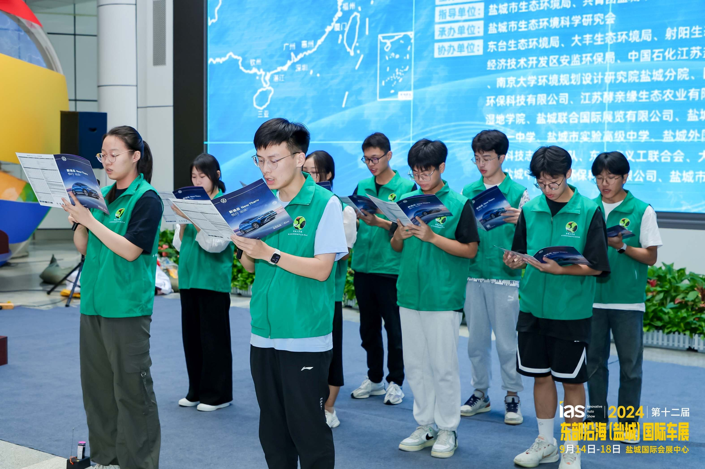
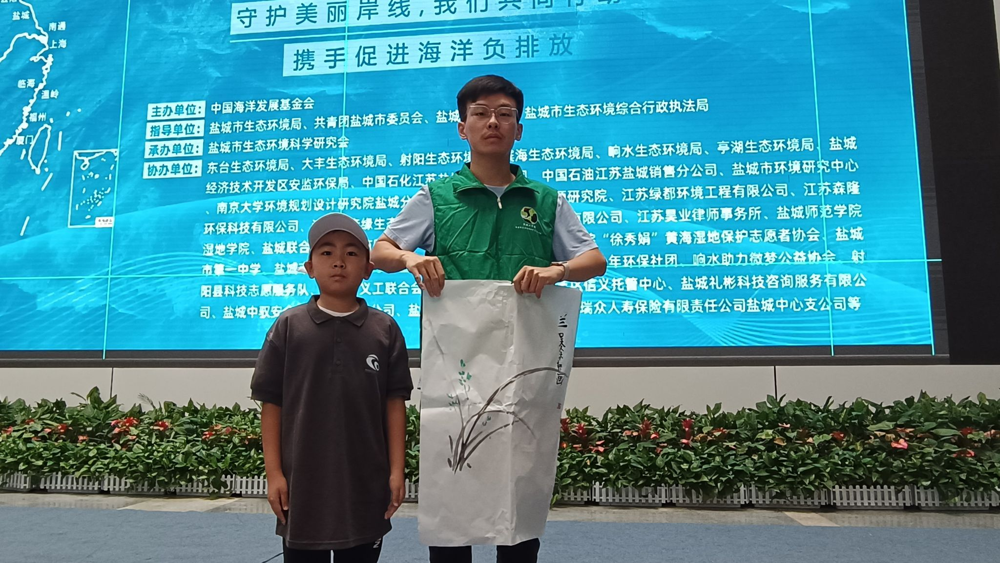
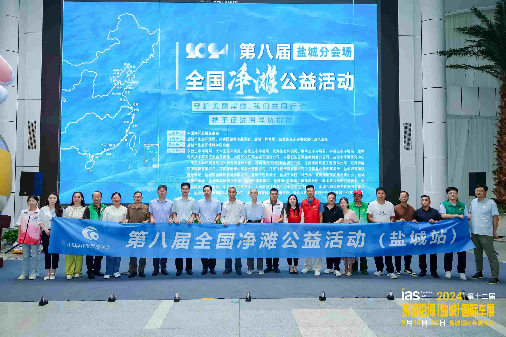

朱钦迟代表协会受邀参加
第八届全国净滩公益活动盐城分会场启动仪式
近日，第八届全国净滩公益活动盐城分会场启动仪式在盐城国际会展中心举行。我校徐秀娟黄海湿地保护志愿者协会受邀作为协办单位参加活动， 协会成员朱钦迟积极参与启动仪式及现场志愿服务，以实际行动践行生态文明理念，展现新时代青年志愿者的责任与担当。 启动仪式上，朱钦迟与来自各界的志愿者代表共同宣读净滩宣言，郑重承诺守护海洋生态环境、维护美丽海岸线。 铿锵有力的誓言不仅表达了志愿者们保护海洋环境的坚定决心，也彰显了青年一代积极参与生态文明建设的责任意识。

活动期间，朱钦迟代表徐秀娟黄海湿地保护志愿者协会接受双馨书画院小画家赠送的环保主题画作。 通过这份充满童真与环保理念的礼物，他深刻感受到生态保护精神代际传承的重要意义，更加坚定了持续参与海洋生态保护志愿服务的信念。

启动仪式结束后，朱钦迟与协会志愿者们来到宣传展区，认真学习海洋环保知识，并积极向现场市民发放宣传资料、讲解净滩行动的意义，
倡导公众从日常生活做起，共同关注海洋生态环境保护。面对市民的咨询，他耐心解答，用通俗易懂的语言传播环保理念，
引导更多人加入到保护海洋生态的行动中来。

“保护海洋生态环境不仅是一份责任，更是一份使命。”朱钦迟表示，作为新时代青年志愿者，将继续发挥自身力量， 积极参与湿地保护、净滩行动等公益活动，用实际行动守护黄海生态环境，为建设人与自然和谐共生的美丽中国贡献青春力量。
据了解，全国净滩公益活动自2017年启动以来，已连续举办八届，覆盖全国沿海11个省区市、160多个市县， 吸引了10余万名志愿者参与。此次活动不仅为广大青年志愿者提供了践行绿色发展理念的平台， 也进一步激发了朱钦迟等青年学子投身生态环保事业的热情与动力。